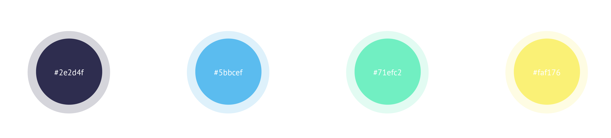

SoleMate is an app designed to help with patients' recovery on lower extremity injury. It will work with smart shoe insoles with pressure sensors. On the app, patients receive real-time feedbacks transmitted from the insoles.
Client
SoleMate Solutions
My Role
Making UI/UX prototypes for SoleMate's picth competition presentation and
real application development. Making graphics to improve their website.
Concepts & Background
The Problem
Patients with lower extremity injury spend most of their time rehabilitation without being watched by their doctors. Usually, they are required by their doctors to put certain amount of weight on their injured foot, but it is challenging for them to accurately follow the instruction. There are high posibility that patients will reinjure during rehabilitation, since they almost receive no feedback after clinic.

Our Solution
SoleMate is designing a device composed of two parts, smart shoe insoles and a mobile app. The mobile app will give patients real-time feedback of how much weight they are puting on their feet, based on data transmitted from pressure sensors on the insoles. The patients then are able to adjust the way they walk. The app will also summarize the users' data, so that doctors can give the patients useful advice based on the summary.


smart insole with three pressure sensors embeded
Feature Highlights
Explaining the research before the patients participate.
Easy access to important information and activity.
Preparing for the real-time feedback test.

Meter and sonic indicator help the user adjust weight on the injured foot.
Visual Design
